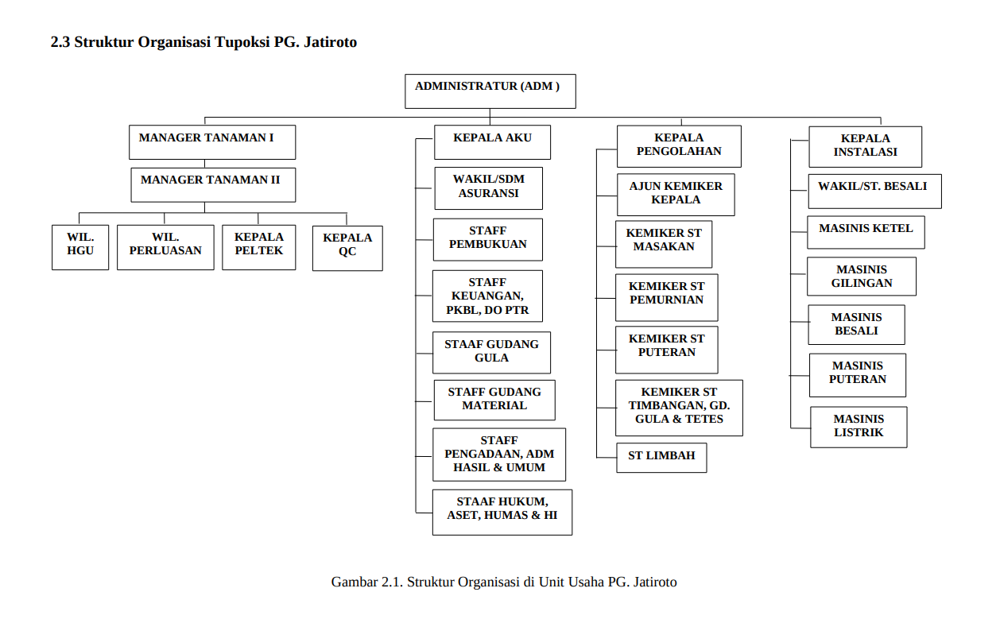
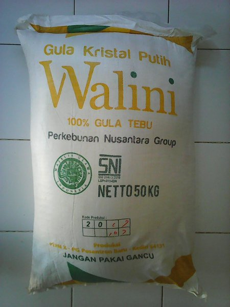
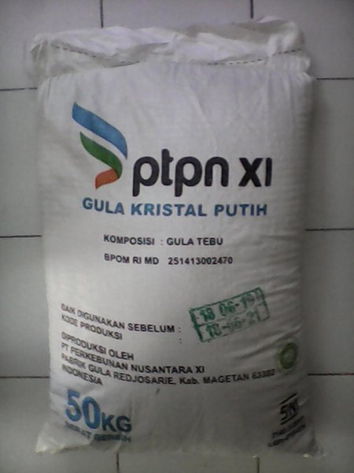

Sejarah
Perkembangan PG. Jatiroto•
Dalam perkembangannya Pabrik Gula Djatiroto mengalami pasang surut sejak berdiri hingga sekarang. Pada masa perang kemerdekaan Pabrik Gula Djatiroto ditangani oleh suatu badan yang bernama Badan Penyelenggara Perusahaan Gula Negara (BPPGN) dan berada di bawah naungan PT. Perkebunan Nusantara XI Jawa Timur. Kemudian pada tahun 1957 industri gula yang ada di Indonesia oleh pemerintah Indonesia dilakukan nasionalisasi dan diambil alih oleh pemerintah Republik Indonesia. Tahun 1961 pemerintah Republik Indonesia membentuk badan baru untuk mengganti BPPGN menjadi Badan Pimpinan Umum Perusahaan Gula Negara dan Karong Goni. Kemudian dalam perkembangan selanjutnya pada tahun 1968 menjadi Perusahaan Negara Perkebunan dan Pabrik Gula Djatiroto berada di bawah PNP XXIV yang berkantor pusat di Surabaya. Pada 1974, terjadi pengalihan bentuk dari perusahaan negara menjadi perusahaan perseroan perkebunan. Kemudian pada 1975 lahir Inpres no. 9 tahun 1975 tentang Tebu Rakyat Intensifikasi (TRI). Sistem TRI merupakan suatu peristiwa penting bagi sejarah pergulaan dan kehidupan petani gula di Indonesia. Perpindahan sistem itu secara resmi berlaku sejak 22 April 1975. Dengan demikian Inpres tersebut merupakan dasar hukum bagi pelaksanaannya. Sistem TRI ini diharapakan pada akhir pelita II harus sudah dapat menggantikan sitem yang telah berlalu sebelumnya. Oleh karena itu, pada tahun 1979 seluruh pabrik gula di Jawa sudah tidak diperkenankan lagi menyewa tanah untuk tanaman tebunya termasuk Pabrik Gula Djatiroto. Dengan adanya Inpres tersebut Pabrik Gula Djatiroto harus melaksanakan sistem yang baru.
Struktur
Struktur Organisasi Perusahaan Sampai Saat Ini•
Pabrik Gula Jatiroto dipimpin oleh seorang General Manager yang
bertanggung jawab ke Dewan Direksi PTPN XI. Berdasarkan diagram struktur
organisasi di atas, General Manager dibantu oleh lima Manajer bagian, yaitu
sebagai berikut.
1. Manajer Pengolahan
Manajer Pengolahan bertanggung jawab kepada General Manager terkait
seluruh proses pengolahan tebu menjadi gula. Selain itu Manajer
Pengolahan juga wajib memberikan laporan kepada Kepala Divisi
Pengolahan di Kantor Pusat PTPN XI.
2. Manajer Tanaman
Manajer Tanaman bertanggung jawab kepada General Manager terkait
seluruh proses penanaman bahan baku tanaman tebu. Selain itu Manajer
Pengolahan juga wajib memberikan laporan kepada Kepala Divisi
Tanaman di Kantor Pusat PTPN XI.
3. Manajer Teknik
Manajer Teknik bertanggung jawab kepada General Manager terkait
seluruh keadaan instalasi pabrik dan seluruh peralatan pendukung
operasional giling. Selain itu Manajer Teknik juga wajib memberikan
laporan kepada Kepala Divisi Teknik di Kantor Pusat PTPN XI.
4. Manajer Akutansi, Keuangan, dan Umum (A.K.U)
Manajer A.K.U bertanggung jawab kepada General Manager terkait
seluruh pekerjaan dalam bidang administrasi, keuangan, dan umum. Selain
itu Manajer A.K.U juga wajib memberikan laporan kepada Kepala Divisi
di Kantor Pusat PTPN XI.
5. Manajer QA (Quality Assurance)
Manajer QA bertanggung jawab kepada General Manager terkait bidang
analisis seluruh sampel, mulai dari bahan baku hingga menjadi produk
gula. Manajer QA juga bertanggung jawab memberikan laporan kepada
Kepala Divisi di Kantor Pusat PTPN XI.
Visi & Misi
Visi
PG. Jatiroto• April 2007
Visi PG. Jatiroto adalah menjadikan perusahaan agribisnis berbasis tebu yang tangguh tumbuh dan terkemuka.
Misi
PG. Jatiroto • March 2003
Misi PG. Jatiroto adalah mengelola usaha agribisnis berbasis tebu untuk memberikan kontribusi bagi peningkatan kesejahteraan dan kemajuan stakeholder melalui pemanfaatan sumberdaya secara efisien dan lestari, sedangkan tujuan PG. Jatiroto sama halnya seperti slogan PTPN XI yaitu Pro aksi yang mempunyai arti produktif amanah kreatif dan simpati serta tangguh tumbuh dan terkemuka.
Produk
Hasil Produk
Produk utama yang dihasilkan oleh PT Perkebunan Nusantara XI adalah gula kristal putih (GKP) berbasis tebu. Hingga kini, gula yang menjadi core business PTPN XI masih merupakan komoditas vital-strategik dalam ekonomi pangan Indonesia. Keberadaannya tidak hanya diperlukan sebagai pemanis berkalori yang menjadi salah satu bahan kebutuhan pokok (basic needs) masyarakat, melainkan juga bahan baku bagi industri makanan dan minuman. Pola produksinya yang melibatkan petani tebu, menyebabkan pemerintah masih merasa perlu mengeluarkan sejumlah kebijakan dan regulasi agar harga gula secara wajar dan menguntungkan semua pihak dapat diwujudkan. Produk yang dihasilkan oleh Pabrik Gula Jatiroto meliputi dua produk, yaitu sebagai berikut:
Gula Kristal Putih merek WALINI
Gula Kristal Putih merek PTPN XI
Prestasi
Pencapaian Perusahaan
Penghargaan• 2020
Prestasi Kinerja Peringkat II Pabrik Gula Terbaik PG Djatiroto - PTPN XI Holding Perkebunan Nusantara2018
Penghargaan• 2003
Penghargaan kepada PASA Djatiroto PTPN XI sebagai Juara Pertama Lomba Pengelolaan Lingkungan Perusahaan Kelompok Industri Umum 2003, tanggal 5 Juni 2003 oleh Pemerintah Daerah Lumajang


Konstruksi
Revitalisasi Pabrik Gula Jatiroto yang sedang berlangsung
Branding, Webdesign
Kereta Lori
Pengiriman gula menggunakan transportasi kereta lori yang akan dikirimkan ke perusahaan
Branding, Web Development
Kunjungan
Kunjungan tamu dari berbagai daerah untuk pengecekan perusahaan berjalan dengan baik
Branding
Client Testimonials
Get In Touch.
Apabila ada masukan dari perusahaan kami, kalian bisa menghubungi kami melalui pesan dibawah ini atau bisa menghubungikami melalui telepon dibawah ini dan bisa juga untuk menemui kami di alamat kami